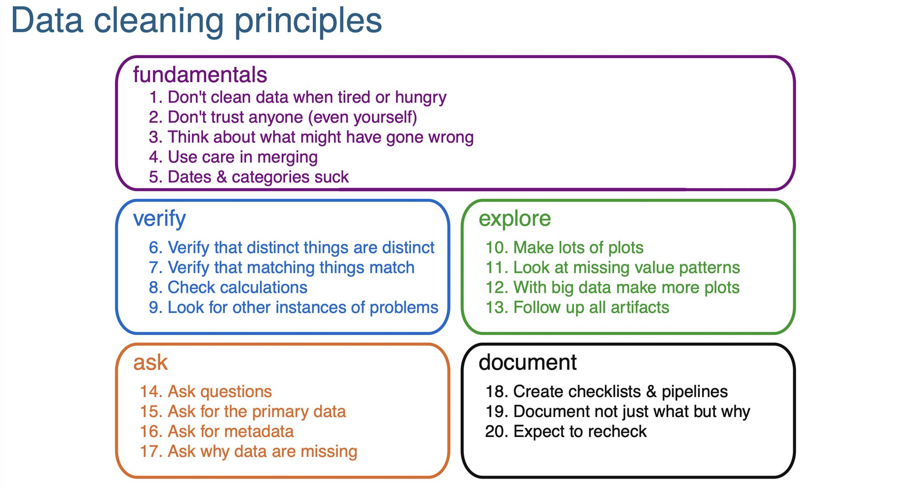
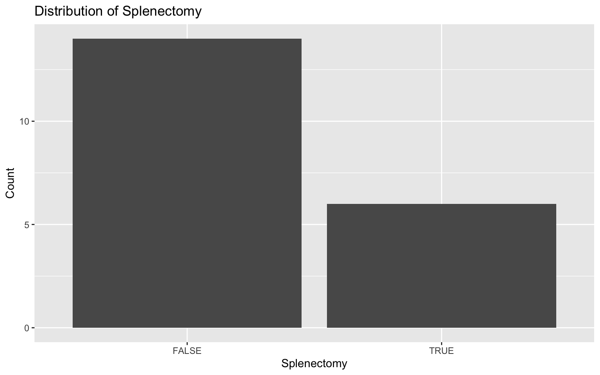
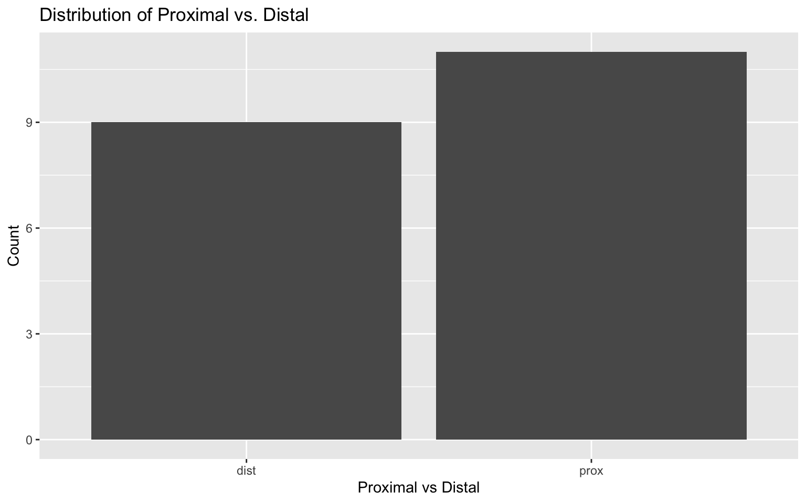
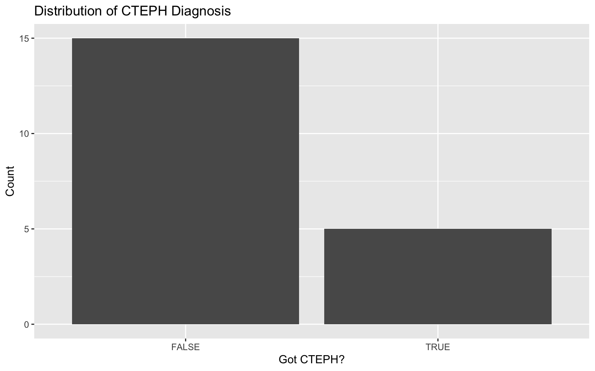
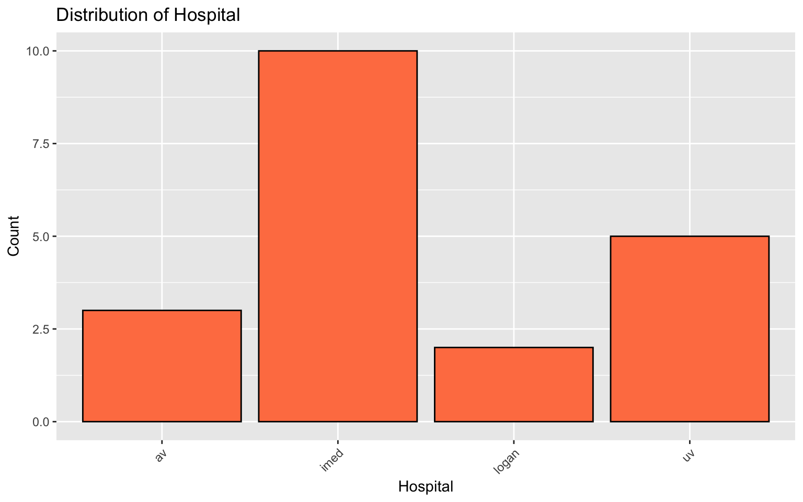

Attaching package: 'dplyr'The following objects are masked from 'package:stats':
filter, lagThe following objects are masked from 'package:base':
intersect, setdiff, setequal, unionThis section is still under construction
Yes - this really is that important to deserve its own chapter.
what are some relevant (to PCCM) data-sets.
Databases compiled by NLM https://www.datasetcatalog.nlm.nih.gov/index.html
The NHLBI Pooled Cohorts Study harmonized spirometry data from nine U.S. population-based cohorts: 9 Prospective US Cohorts from NHLBI includig spirometry: (from Am J Epidemiol. 2018;187(11):2265–2278 )
https://academic-oup-com.ezproxy.lib.utah.edu/aje/article/187/11/2265/5047150
ARIC, Atherosclerosis Risk in Communities
CARDIA, Coronary Artery Risk Development in Young Adults
CHS, Cardiovascular Health Study;
FHS-O, Framingham Heart Study—Offspring Cohort
HABC, Health, Aging and Body Composition
HCHS/SOL, Hispanic Community Health Study/Study of Latinos
JHS, Jackson Heart Study
MESA, Multi-Ethnic Study of Atherosclerosis;
SHS, Strong Heart Study.
Spiromics
COPDGene
TriNetX
Pinc AI Healthcare
Sleep: Sleepdata.org
NCHS: National Center for Health Statistics Datasets:: https://www.cdc.gov/nchs/nhis/nhis_questionnaires.htm
https://nhis.ipums.org/nhis/aboutIPUMSNHIS.shtml <— documentation for the NCHS datasets, and an integration of several years with weightings.
Reference for sampling designs - https://stats.oarc.ucla.edu/other/mult-pkg/faq/faq-choosing-the-correct-analysis-for-various-survey-designs/ ; https://stats.oarc.ucla.edu/stata/seminars/survey-data-analysis-in-stata-17/
NHIS—list of variables pertinent to respiratory health: https://nhis.ipums.org/nhis/userNotes_HP2020.shtml#group14
— can be linked with the National Death Index
National Inpatient Sample Data elements: https://hcup-us.ahrq.gov/db/nation/nis/nisdde.jsp
NHANES
MIMIC - III/IV
EICU - https://www.nature.com/articles/sdata2018178
SicDB - https://link.springer.com/article/10.1007/s00134-023-07046-3 Salzburg “SICdb (1.0.4) contains 27,386 admissions from 4 different intensive care units (ICUs) at 1 single tertiary care institution of the Department of Anesthesiology and Intensive Care Medicine at the Salzburger Landesklinik (SALK) and Paracelsus Medical University (PMU) between 2013 and 2021.” 1-per-minute. https://www.sicdb.com/
—-> comment on anonymization https://link.springer.com/article/10.1007/s00134-023-07153-1
| Database | Features | Link |
|---|---|---|
| MIMIC III | EHR, notes, high-frequency physiology; ICU | https://physionet.org/content/mimiciii/1.4/ |
| MIMIC IV | EHR, notes, high-frequency physiology, electrocardiograms, radiologic images, EEG, echocardiograms; Emergency department, hospital, ICU | https://physionet.org/content/mimiciv/2.2/ |
| eICU | EHR; ICU | https://physionet.org/content/eicu-crd/2.0/ |
| AmsterdamUMCdb | EHR; ICU | https://amsterdammedicaldatascience.nl/amsterdamumcdb/ |
| HiRID | EHR, high-frequency physiology; ICU; COVID-19 focused | https://physionet.org/content/hirid/1.1.1/ |
| SICdb | EHR; high-frequency physiology; ICU | https://physionet.org/content/sicdb/1.06/ |
| Zhejiang | EHR; ICU | https://physionet.org/content/zhejiang-ehr-critical-care/1.0/ |
| Pediatric Intensive Care | EHR; ICU | https://physionet.org/content/picdb/1.1.0/ |
UPDB ***
NHLBI BioData Catalyst - https://academic-oup-com.ezproxy.lib.utah.edu/jamia/article/30/7/1293/7165700?utm_source=etoc&utm_campaign=jamia&utm_medium=email&nbd=41184264570&nbd_source=campaigner - includes TOPmed, COVID data-sets. Idea = a place for researchers to store these resources
EDW.
Research Networks: (get Limited dataset)
-PCORNET (can access broad network) - need to submit an IRB to them. Dr. Hess is local contact
-ACT (smaller version of PCORNET)
-Clinithink
-TriNetX
-Epic Cosmos
Data Science Services (since ~2016) - handles query with research.
Services prioritized if they involve a grant or a grant application (4h, or requires seed function). Also can be prioritized as short queue (4-5 hours or less).
In the future, there will be a merit reward to prioritize your project. Step 0: Save yourself a headache and collect your data in a processable format https://open.substack.com/pub/statsepi/p/simple-tips-for-recording-data-in
Format article: https://journals.plos.org/ploscompbiol/article?id=10.1371%2Fjournal.pcbi.1012604&utm_source=substack&utm_medium=email
naming: https://benharrap.com/post/2025-03-03-variable-naming-convention/
Data abstraction:
Data from web tables https://twitter.com/asmith83/status/1549373680496656385?s=21&t=4SAl-DHtn3zREP_avr6XaA
Data collection with excel - https://www.youtube.com/watch?v=Ry2xjTBtNFE Also https://twitter.com/blakeaburge/status/1540666548616036353?s=11&t=Dl6FGUjENZiqAT0eXQ_I6A
Step 1: Data Wrangling
naming variables: https://emilyriederer.netlify.app/post/column-name-contracts/

Clean tabular format etc.
Presentation on Cleaning - https://cghlewis.github.io/ncme-data-cleaning-workshop/slides.html
Use excel like a boss, if you’re going to: More excel data https://cghlewis.com/blog/excel_entry/
Flat files: Flat files: https://evidence.dev/blog/what-is-a-flat-file?utm_campaign=Data_Elixir&utm_source=Data_Elixir_526
[ ] data checklist - find attribution for this
### **Data Quality Indicator Checklist**
#### **✓ Analyzable**
- Dataset is in a rectangular (rows and columns), machine-readable format. Variable names are the first row only. The remaining data should be made up of values in cells.
- One or more columns uniquely identify rows in the data (i.e., primary key).
- All column values are explicit.
- No values are indicated by color coding.
- All non-missing values are explicitly defined (e.g., if a blank is assumed to be 0, it is filled with a 0).
- Only one piece of information is contained in a variable.
#### **✓ Complete**
- Everyone in your sample (e.g., consented, included in the study, completed the instrument) is accounted for.
- If you collected it, it should exist in the file.
- There should be no rows with duplicate primary keys (e.g., study unique identifiers).
#### **✓ Interpretable**
- Variable names are machine-readable (i.e., no special characters or spaces) AND human-readable (consistently formatted and clear to humans).
- Variable and value labels are added if sharing in SPSS, Stata, or SAS format.
- Consider sharing in at least one non-proprietary format (e.g., CSV).
#### **✓ Valid**
- Variables conform to the constraints that you have laid out in your data dictionary.
- Planned variable types (e.g., numeric, character, date).
- Allowable variable values and ranges (e.g., 1-50).
- Item-level missingness aligns with variable universe and skip patterns.
#### **✓ Accurate**
- There are no glaring errors in the data that you have not acknowledged.
- Based on any implicit knowledge you have.
- Based on a comparison of information within and across sources.
#### **✓ Consistent**
- Variable values are consistently measured, formatted, or categorized within a column.
- Variables are consistently measured across collections of the same form.
#### **✓ De-identified**
- Disclosure risks have been addressed (both direct and indirect identifiers have been removed/altered as needed).
https://cghlewis.com/talk/rladies_nyc/ comparison of ways to do this in R
Step 2: For each data element, consider the data type
| dichotomous | nominal | ordinal | interval | |
| a.ka. | binary | categorical | ordered categorical | continuous |
| n | X | X | X | X |
| % | X | X | X | X |
| min | X | X | ||
| max | X | X | ||
| range | X | X | ||
| mode | X | X | X | X |
| mean | X | |||
| median | X | X | ||
| IQR | X | X | ||
| Std. dev. | X | |||
| Std. err. | X |
From: Stoddard GJ. Biostatistics and Epidemiology Using Stata: A Course Manual. Salt Lake City, UT: University of Utah School of Medicine.
TODO: not sure this stuff should live here vs elsewhere:
Step 3: Visualize the distribution of each data-point (detect outliers, data entry errors, etc.)
Darren’s hypothetical code lives in a spreadsheet “darren_proj.xlsx”:
Here is some code that loads the excel spreadsheet into R (we’ll revisit)
Attaching package: 'dplyr'The following objects are masked from 'package:stats':
filter, lagThe following objects are masked from 'package:base':
intersect, setdiff, setequal, unionIt’s already (mostly) clean.
Let’s summarize it:
patient_id splenectomy prox_v_dist qanadli
Min. : 1.00 Length:20 Length:20 Min. : 2.00
1st Qu.: 5.75 Class :character Class :character 1st Qu.: 3.75
Median :10.50 Mode :character Mode :character Median :10.00
Mean :10.50 Mean :10.30
3rd Qu.:15.25 3rd Qu.:15.00
Max. :20.00 Max. :25.00
got_cteph? hosp
Min. :0.00 Length:20
1st Qu.:0.00 Class :character
Median :0.00 Mode :character
Mean :0.25
3rd Qu.:0.25
Max. :1.00 Hmmm.. what’s wrong with this?
R need to be told that the binary variables are binary (and not characters)
library(dplyr)
# Convert 'y'/'n' in the splenectomy column to TRUE/FALSE
darren_data_sheet <- darren_data_sheet %>%
mutate(splenectomy = ifelse(splenectomy == "y", TRUE, FALSE))
# Assuming darren_data_sheet is your dataframe
darren_data_sheet <- darren_data_sheet %>%
mutate(`got_cteph?` = ifelse(`got_cteph?` == 1, TRUE, FALSE))Let’s visualize each element:
library(ggplot2)
# First, the binary ones
# Plot for splenectomy
ggplot(darren_data_sheet, aes(x = factor(splenectomy))) +
geom_bar() +
labs(title = "Distribution of Splenectomy", x = "Splenectomy", y = "Count")
# Plot for prox_v_dist
ggplot(darren_data_sheet, aes(x = factor(prox_v_dist))) +
geom_bar() +
labs(title = "Distribution of Proximal vs. Distal", x = "Proximal vs Distal", y = "Count")
# Plot for got_cteph?
ggplot(darren_data_sheet, aes(x = factor(`got_cteph?`))) +
geom_bar() +
labs(title = "Distribution of CTEPH Diagnosis", x = "Got CTEPH?", y = "Count")
The categorical one:
# Bar chart for hosp
ggplot(darren_data_sheet, aes(x = factor(hosp))) +
geom_bar(fill = "coral", color = "black") +
labs(title = "Distribution of Hospital", x = "Hospital", y = "Count") +
theme(axis.text.x = element_text(angle = 45, hjust = 1)) # Adjust text angle for better readability if needed
and finally, the continuous one:
Packages to expedite:
R - https://cosimameyer.com/post/exploratory-data-analysis-in-r/?utm_source=substack&utm_medium=email
https://johnborghi.github.io/Supporting_Scientific_Data/
Youtube video from Dahly - https://www.youtube.com/watch?v=Ry2xjTBtNFE&t=145s&utm_source=substack&utm_medium=email
Data cleaning resources: https://www.anyamemensah.com/blog/recoding-cols-python?utm_source=substack&utm_medium=email